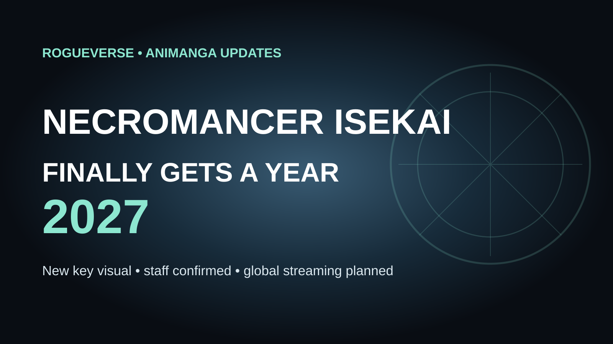

ANIME NEWS • AUGUST 20, 2026
Necromancer Isekai Finally Gets a 2027 Release Window
Nearly three years after the adaptation was first announced, Matteo's overpowered second life finally has a year on the calendar, plus a confirmed staff lineup and worldwide streaming plan.

Necromancer Isekai: How I Went from Abandoned Villager to the Emperor's Favorite is now officially targeting 2027, giving the long-developing light-novel adaptation its clearest release milestone since the anime was first announced in October 2023.
The August 20 update also brings a new key visual and reiterates the core production team. Masahiko Komino directs, Tsutomu Kaneko handles series composition, Junko Yamanaka is responsible for character design, and Lunch Box is producing the animation. Global streaming is planned for 2027 as well, although a specific platform and exact premiere date have not yet been announced.
First, a Name Correction
Some English reporting romanizes director 小美野雅彦 inconsistently. The official Japanese site lists the director as 小美野雅彦, commonly rendered in English industry reporting as Masahiko Komino. RogueVerse is using Komino here rather than “Konomi.” The same official site lists Kaneko, Yamanaka, producer GENCO and animation studio Lunch Box.
That small correction is worth making now, before the 2027 promotional cycle turns one typo into fifty copied staff lists.
Why the 2027 Window Matters
The anime was announced in October 2023, but for a long stretch the project had no firm release year. A teaser site and visual arrived in April 2025, followed by the first announced cast in May. Those updates proved the adaptation was moving, but they still left the largest practical question unanswered: when would viewers actually see it?
2027 is not a precise date, but it is meaningful scheduling progress. It moves the project from an open-ended “upcoming” state into a defined release cycle and gives the production a window around which trailers, theme songs, distribution details and additional casting can eventually gather.
Maaya Uchida Leads the Cast as Matteo
Maaya Uchida voices Matteo, the reincarnated protagonist whose new life begins with considerably better circumstances than his first. The announced cast also includes Yuki Yomichi as Ishtar, Sayako Tojo as Hecate and Mei Igarashi as Metis.
The premise follows a former ordinary villager reincarnated as the grandson of a powerful noble. Matteo quickly reveals enormous magical potential, hatches an ancient dragon egg, revives ancient magic and begins accumulating the sort of abilities that make the phrase “balanced character build” quietly leave the room.
The Source Material Already Has Room to Feed an Anime
The story originates from Nazuna Miki's light-novel series, illustrated by Kaito Shibano and published by Shueisha under the Dash X Bunko label. Miki is also known for My Unique Skill Makes Me OP Even at Level 1.
The series began online before receiving its commercial light-novel edition, and it later expanded into a manga adaptation illustrated by Suzume Kumo. By the time the anime enters its 2027 window, it will therefore be adapting a property with several years of published material and an existing manga route for readers who want to sample the story before broadcast.
What Kind of Isekai Is This?
The title may sound like another grim necromancer power fantasy, but the official synopsis emphasizes a different engine: Matteo is reincarnated into privilege, receives affection from his powerful grandfather and discovers that his magical talent is wildly beyond normal expectations.
That places the series closer to the “overpowered reincarnation life” branch of isekai than a survival story built around a rejected hero clawing upward from nothing. The abandoned-villager origin establishes the contrast. The new life is about what happens when someone previously unrewarded is suddenly surrounded by opportunity, affection and absurd potential.
The adaptation's challenge will be making that wish-fulfillment satisfying rather than frictionless. Overpowered protagonists work best when strength creates new kinds of problems, relationships or responsibilities instead of simply deleting every obstacle on contact.
Lunch Box Has the Job of Selling Matteo's Magic
Animation studio Lunch Box now has a clear 2027 target for translating the novels' magical spectacle to television. The new visual is useful as a promotional marker, but the next major test will be motion: a proper trailer showing spell effects, creature animation, character acting and the overall density of the fantasy world.
For a series built around extraordinary magical aptitude, presentation matters. Matteo's abilities need to feel impressive enough to justify the reactions around him without turning every encounter into indistinguishable glowing noise.
Worldwide Streaming Is Planned, Platform Still Unknown
The new announcement says global streaming is planned for 2027. That is encouraging for international viewers, but it should not be mistaken for a confirmed Crunchyroll, Netflix, HIDIVE or other platform deal. As of this update, the specific service has not been named in the reporting available to RogueVerse.
That is one of the next details worth watching alongside the exact season. “2027” could still mean winter, spring, summer or fall, and those windows can create very different competitive environments for a new fantasy anime trying to stand out.
RogueVerse Take
This is less a surprise announcement than a sign of life becoming a schedule.
Necromancer Isekai has been public knowledge since 2023, so the important development is that the production has finally crossed into a release year with a staff identity, cast foundation and global distribution intent attached. That is the point where an adaptation begins feeling less theoretical.
The next trailer will tell us much more. For now, 2027 is the year to watch, and the long wait finally has an edge.
Sources
Official TV anime site for Mukuware Nakatta Murabito A; Anime Corner, August 20, 2026; Crunchyroll News coverage of the April and May 2025 visual and cast announcements.
Editorial / Rights Notice: The source light novels, manga, anime title, characters and official artwork belong to Nazuna Miki, Kaito Shibano, Shueisha and the applicable production/rightsholder entities. RogueVerse Media does not claim ownership. This RogueVerse header is an original text-based editorial graphic and does not reproduce franchise character likenesses.